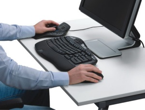

3D fare nedir?
3D fare, klasik fareye ek olarak diðer elinizle kullanacaðýnýz, döndürme, kaydýrma, zoom gibi navigasyon iþlemlerini boþta olan elinizle, klasik fare ile yaptýðýnýz seçme ve komut iþlemleri ile eþ zamanlý olarak yapmanýza olanak saðlayan araçtýr. Bu da klasik fare kullandýðýnýz elinizin yükünü yarý yarýya azaltacak ve daha akýcý bir çalýþma imkaný saðlayacaktýr.
Modeli elinizde tutar gibi ya da helikopter uçuþu þeklinde kaydýrýn, yakýnlaþýn, döndürün. Bu klasik fare ya da klavye ile asla ulaþamayacaðýnýz bir kontrol seviyesidir. Daha geniþ bilgi için:
www.3dconnexion.com
www.TurkCADCAM.net/urun/2010/3Dconnexion-01
Sanal uzantýnýz
3D modellerinizi kontrol etmek için 3Dconnexion 3D fare kullanmak, onlarý elinizde tutmak kadar kolay. Özel tuþuna parmak uçlarýnýzla yapacaðýnýz hafif hareketler, 3D objelerinize
keskin ve kolay kontrol imkaný sunar.
Güçlü, kullanýmý kolay
3D deneyiminin tadýný çýkarmak isteyen herkes için, geliþmiþ 3D navigasyon
Konfor
Ýpeksi, ergonomik ve elinizin þeklini alan bir 3D mouse ile yorgunluðu azaltýn. Üstelik her iki elinizin kullanýmýna da uygun.
Üstün 3D Navigasyon Deneyimi
3Dconnexýon ürünleri, her boyutta kolay navigasyonu destekler. 3D fare ile, modelinizi her þekilde konumlandýrýrsýnýz – döndürme, kaydýrma, yakýnlaþtýrma, akýcý hareketler. 3D mouse geleneksel farelere eþlik edecek þekilde, boþ olan el aracýlýðýyla kullanýlýyor. Mouse için olan eliniz, eþ zamanlý olarak modeli düzenlemek için ya da menü seçimleri için özgür.
130'den fazla 3D program desteklenir
AutoCAD | Pro/ENGINEER | SolidWorks | Softimage | CATIA V6 | NX | Solid Edge | Inventor
| 3ds Max | Maya | SketchUp | CATIA V5
Tam liste için týklayýnýz;
www.3dconnexion.com/supported-software
Her bütçe için
Rekabetçi bir fiyatta, ideal bir 3D mouse sizin için mevcut. Ayrýca 3D farelere yapýlan yatýrýmýn geri dönüþü için yapýlan araþtýrma için: www.TurkCADCAM.net/rapor/3D-mouse
Nasýl satýn alabilirim?
Türkiye'de bir çok bayiimiz mevcuttur. Liste için:
www.3dconnexion.com/buy/locate-a-reseller.html
Test imkaný
Eðer ürünlerimizi test etmek isterseniz, listede yer alan bayilerimizle ya da bizimle
(eesales@3dconnexion.com) iletiþime geçebilirsiniz.
|